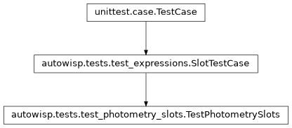

autowisp.tests.test_photometry_slots module
Class Inheritance Diagram

Tests for photometry slots in diagnostic expressions.
The second subscript, magfit_residual[0][1], binding the photometries of
a quantity read per photometry as the first binds its channels. Kept apart
from autowisp.tests.test_expressions only for length; the fixture is
its SlotTestCase, with a
per-photometry diagnostic added.
- class autowisp.tests.test_photometry_slots.TestPhotometrySlots(methodName='runTest')[source]
Bases:
SlotTestCase
Photometries, bound through a second subscript as channels are through the first.
The library adds to the channel one: two photometries of one channel; one formal photometry against a quoted aperture; an expression passing its photometries on the other way round; one quoting both its channel and its photometry, the shape fit; and a channel-free one taking a photometry, and one reading that.
- library = {'against_ap4': "magfit_residual[0][0] - magfit_residual[0]['ap4']", 'apertures': 'magfit_residual[0][0] - magfit_residual[0][1]', 'doubled_g': 'g_residual[()][0] * 2', 'fixed': "sky_color['B', 'R']", 'g_residual': "magfit_residual['G0'][0]", 'g_shapefit': "magfit_residual['G0']['shapefit']", 'inner': 'bg_center[1] / bg_center[2]', 'mixed': 'bg_center[1] * night', 'night': 'jd - nanmin(jd)', 'outer': 'inner[2,1] + bg_center[1]', 'over_fixed': 'bg_center[1] * fixed', 'relative': "bg_center[1] - bg_center['G0']", 'scaled_night': 'night * 2', 'silly': 'sky_color[1,2] - sky_color[2,3]', 'sky_color': 'bg_center[1] / bg_center[2]', 'swapped': 'apertures[1][1, 0] + bg_center[1]', 'twice': 'sky_color[1,2] + sky_color[1,2]'}
- residual = {('B', -1): array([1., 2.]), ('B', 0): array([2., 4.]), ('B', 2): array([4., 8.]), ('B', 3): array([ 5., 10.]), ('B', 4): array([ 6., 12.]), ('G0', -1): array([21., 42.]), ('G0', 0): array([22., 44.]), ('G0', 2): array([24., 48.]), ('G0', 3): array([25., 50.]), ('G0', 4): array([26., 52.]), ('R', -1): array([11., 22.]), ('R', 0): array([12., 24.]), ('R', 2): array([14., 28.]), ('R', 3): array([15., 30.]), ('R', 4): array([16., 32.])}
magfit_residualper channel and photometry, distinct everywhere so that reading the wrong one cannot pass by coincidence.
- test_a_read_must_match_what_it_reads()[source]
A photometry subscript exactly where one is taken, naming one.
- test_a_rule_takes_at_most_one_photometry_slot()[source]
The other photometries a rule reads are quoted.
- test_evaluated_in_the_photometries_bound()[source]
swappedat(2, shapefit)isaperturesat the reverse.
- test_needed_in_every_photometry_read()[source]
Formal ones bound, quoted ones read as the ids they spell.
- test_parameters_and_arity()[source]
Derived from the second subscripts, as channels from the first.
- test_reads_carry_their_photometries()[source]
The second subscript is part of the read, not a read of its own.
- wanted = {'against_ap4': {(('B',), (0,))}, 'doubled_g': {((), (3,))}, 'g_shapefit': {((), ())}, 'swapped': {(('R',), (2, -1))}}
One of each shape above, all wanted at once.